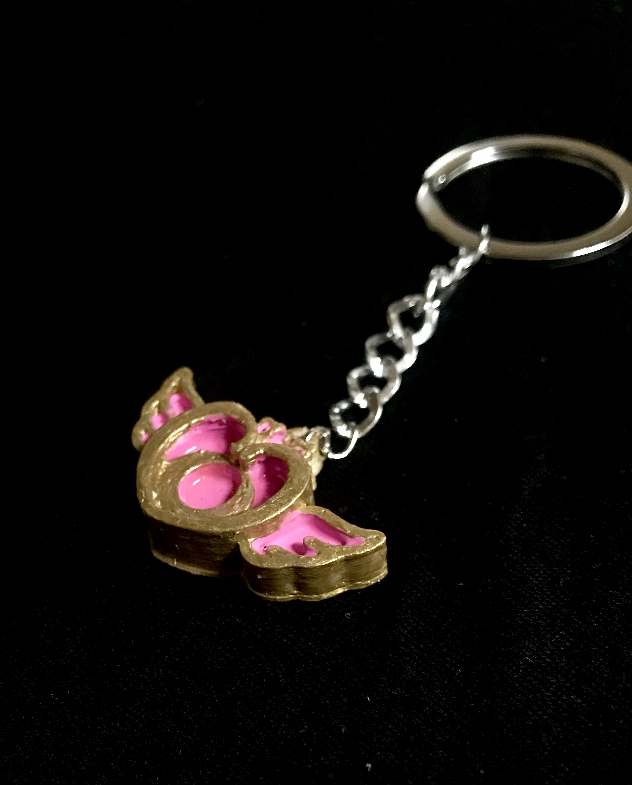
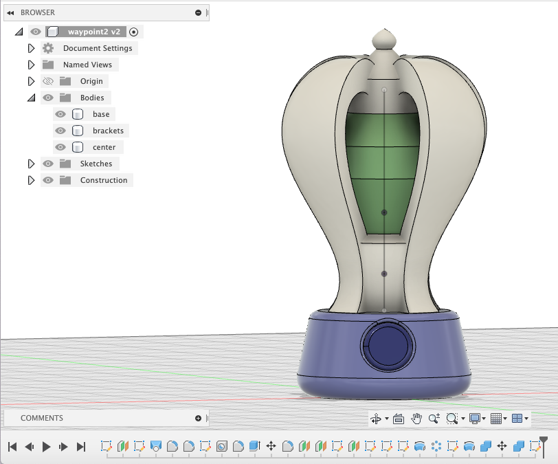

ART 103

Artifact
Phase 1 - Find, Prep and Print a Thingiverse Artifact
I chose a heart-shaped pendant from the show Sailor Moon as my test print. I personally have never watched Sailor Moon, but one of my close friends had a birthday coming up and Sailor Moon is one of her favorite shows. I bought a Sailor Moon handbag for her and I thought that turing the pendant into a keychain to attach to the bag would add a nice personal touch that she would enjoy.
Phase 2 - The Artifact and Story: Project Outline

Phase 3 - Share your Rough Images and Backstories
Concept 1 Story: In a world where roads have completely disappeared. Due to overpopulation, all space on land has been taken up by residential and commercial buildings. There is no more room for a vehicle to drive on land, so there are new forms of rapid travel that involve flying. Flying cars, motorcycles, and even public transportation such as flying buses and trains have been invented. There are factors that companies must consider when developing products meant for these new circumstances. These factors involve more exposure to UV rays, adaptation to higher velocities, and turbulence resistance.Anti Gravity Coffee Cup
This artifact is made in a world where people would commute to and from work or school using flying vehicles. Because of this, we had to adapt everyday objects to fit these modes of transportation. This anti-gravity cup prevents coffee spillage during turbulence due to its anti-gravity chamber and a magnetic base that secures it to any cup holder.Motor helmet for air travel
In a world where vehicles fly, commuters who prefer to travel via motorcycle would be much more exposed to the elements compared to current-day motorcycle riders. This helmet allows users to breathe properly at high altitudes while combating harmful UV rays.Pocket-Sized Waypoint - 2 versions
Waypoints allow users to have a device that allows them to travel to specific locations. Users set the pocket-sized waypoint marker on a flat surface whenever they want to travel. Public waypoints are set up in popular areas. This includes in front of City Hall in Downtown San Jose, near Pier 39 in San Francisco, and in Times Square in NYC. Waypoint kits are also available so users can set up waypoints at their homes, office, or other places of interest.PDF of Phase 3
Phase 4 - Story Sign off and Rough Draft of Model Submisson
The model that I decided on was the waypoint. It consits of a green "stone" that is attached to a base with brackets. I separated the model into parts so I can install a battery-powered LED in the center. Phase 5 - Finished Object

Phase 6 - Video Presentation
I added on to the background of my object by coming of with a fictional transportation company called "VOIAGE". Our motto is "Go far with VOIAGE". Our newest product, Intry, lets consumers go far using teleportation. My final video presntation shares how my product can impact the world and the way we travel. It highlights the benefits of elimating traffic and making long distance relashionships easier.